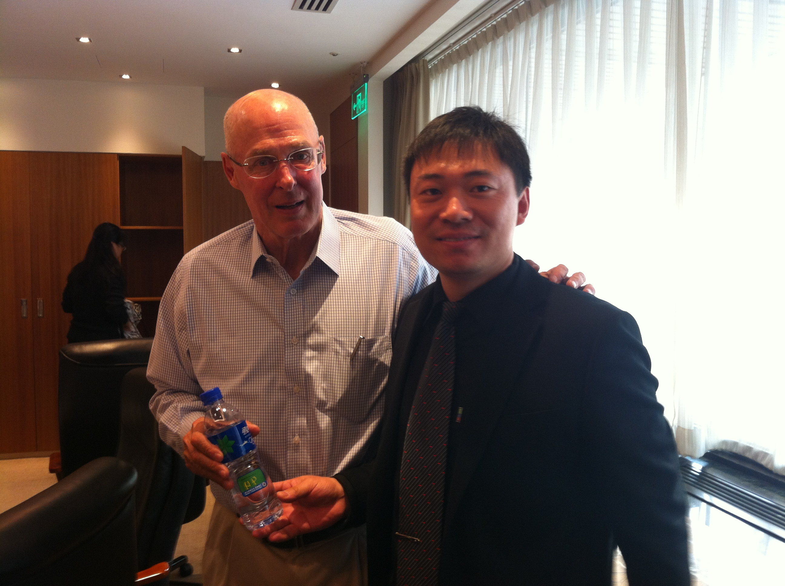
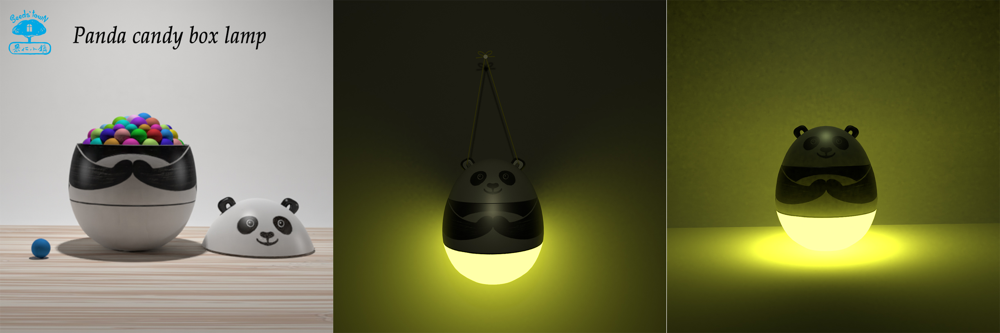

Major Archives

Fu Yue Bottle
With Astronaut Yang Liwei

iWater Initiative
Social Innovation Action

22 Picture Books
Created in the Mountains
Author of 22 picture books. 2025 Bologna Illustrators Exhibition Finalist.
Leading the "iWater Initiative" to drive social change through behavioral design.
Specializing in tech-art and social innovation. Inventor of the iWater sticker.

An innovative fusion of storytelling and sustainable technology. As the physical legacy of the picture book "A Candy Rain", this solar-powered lamp serves as a beacon of hope, bringing light and education to children in off-grid communities across Africa.
With Astronaut Yang Liwei

Social Innovation Action
Created in the Mountains